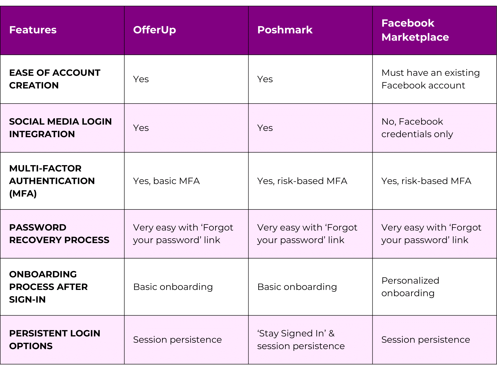
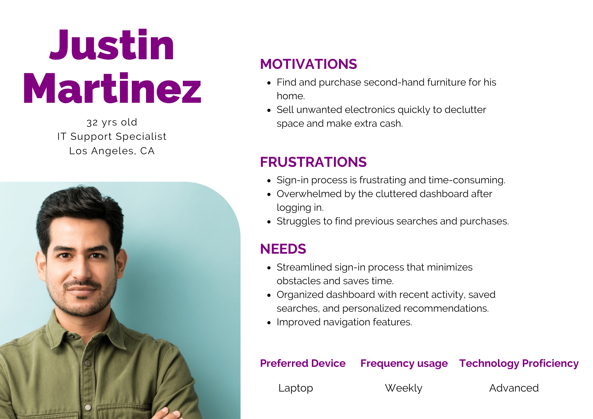
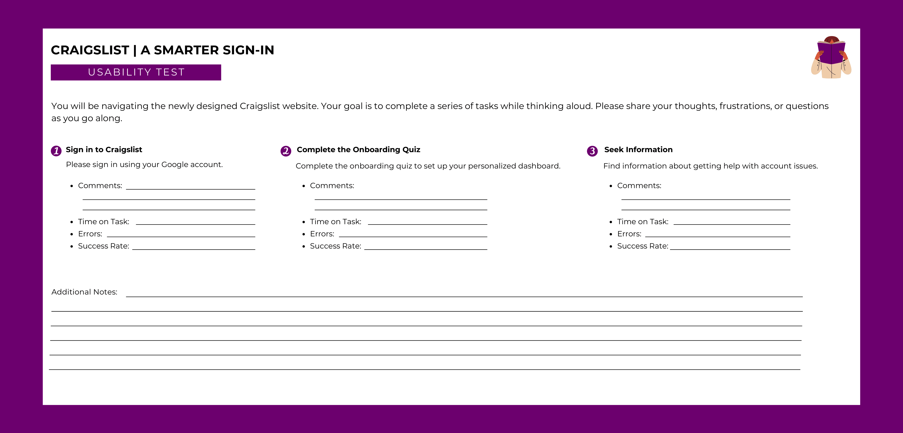

Scoping Out the Competition
I started this process with a competitor analysis to help me identify valuable features from similar platforms to create a more intuitive and engaging redesign.
Chatter in the Marketplace
To understand the users’ experience better, I conducted remote interviews with three participants from various parts of the USA. Participants were selected through a screener survey based on their familiarity with Craigslist and their interest in second-hand items to ensure relevant feedback on the sign-in process.
Here’s what the user interviews revealed:
Who's Buying and Selling?
Based on the insights gathered from the user interviews, I created a user persona that reflects the shared experiences of Craigslist users.
Connecting the Dots
Now, it's time to turn these insights into action by mapping out a user flow that streamlines the sign-in process.
Building the Framework
With the user flow mapped out, I moved on to design the low-fidelity wireframe that outlines the website's structure and layout.

Reaching the Midpoint
Low-Fidelity Wireframe? Checked! I then progressed to the mid-fidelity wireframe, where I further defined the interactive features and incorporated text elements to bring the design closer to its final form.

Polishing the Platform
After completing the mid-fidelity wireframe, I shifted my focus to the high-fidelity mockup to refine the visual design and create a more polished representation of the user experience.

All Wired Up
I then added interactivity to transform the static elements into a high-fidelity prototype that simulates a realistic experience.
What Do Users Say?
I conducted remote usability testing with the three participants from my initial research. However, due to scheduling conflicts, one participant was unavailable. I then selected another candidate from the original pool identified through my screener survey to ensure alignment with the user persona criteria.
The usability test results showed no significant issues with the onboarding or sign-in process but revealed a strong need for faster support when seeking help.
Final Touches
Feedback from the usability test suggests an opportunity to refine my design by adding an AI chatbot. The chatbot would provide immediate help without the need to dig through support pages, like FAQs, and improve the overall user experience.
Design Essentials
Here’s the style guide that defined the visual identity for my Craigslist redesign.

Key Learnings
- Simple Onboarding: A smoother sign-in process greatly reduces user frustration.
- Importance of Personalization: Users love a tailored experience as it makes them feel more connected to the platform.
- Instant Support: Timely assistance is key to user satisfaction.
- Iterative Testing: The value of continuous usability testing can’t be overstated. Each round of feedback helped me refine my design which led to better solutions.
- Navigation Clarity: Clear navigation is essential for users to feel confident exploring the site. When they know where to go, they’re more likely to stay engaged.
- Visual Appeal Matters: A polished design not only makes a positive first impression but also builds user trust.